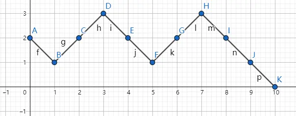
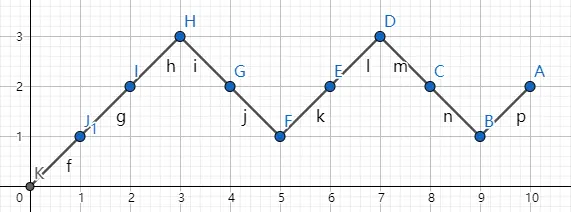
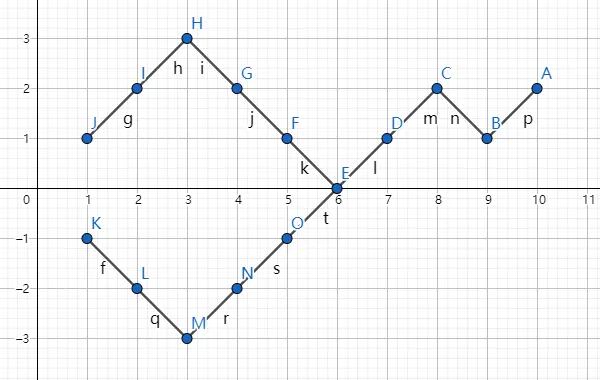

本文是对Simple Sequential A/B Testing的解读。 该方法归属序贯检测类，可以用于伯努利分布场景，随着抽样持续进行，判断接受零假设或备择假设（关于序贯检测）。
理论依据——赌徒破产问题
一个赌徒携带d元进入赌场，每次下注一元，胜利额外赢得一元，失败则输掉一元。假如赌博是公平的，赌徒在第n轮剩余0元的概率（记作\(R_{n,d}\)）是多少？
概率计算
使用\(R_{n,d}\)来表示赌徒起始d元在第n轮输光的概率。 总局：n，输：(n + d) / 2，胜：(n - d) / 2。
赌场可以借钱给赌徒的情况，此时为简单的排列组合关系。
>\(R_{n,d} = \binom{n}{(n + d)/ 2} * 2^{-n}\)赌场不肯借钱给赌徒情况。
> \(R_{n,d} = \frac{d}{n}\binom{n}{(n + d)/ 2} * 2^{-n}\)
这是简单序贯检测的基础，将在下面推导。
随机游走和选举定理
在此对第二种情况进行计算。
- 取纵坐标为钱，横坐标为赌博轮次，则过程为一维随机游走。举例：

- 此时从A出发到K，满足条件路径数（中途不与0轴接触），等于从K出发到A的路径数。场景转换为从0开始，到d结束。

在满足中途不触碰0轴条件，第一步必须为正。则从J到A路径数等于从A到K路径数。

如图所示，每一条从J到第一个接触横轴的点的路径，总有一条从K出发到相同点的映射路径，后续都走相同路径。因此J到A经过横轴路径数等于K到A的路径数。设从0出发，有p步向上，q步向下。根据3，满足不触碰横轴概率为： $ ( {p - 1} - ) / = $
此公式被称为选举定理。 >将\(p + q = n, p - q = d\)带入，原问题最终结果为\(\frac{d}{n}\binom{n}{(n + d)/ 2} * 2^ {-n}\)
简单序贯检测
简单序贯检测是基于上面的结论产生的。
与赌徒破产问题的关系
均等流量的转化率型ab测试场景中，实验组、对照组随着时间推移，都会产生转化。在零假设下，下一次转化发生在实验组或对照组的概率是相等的。因此可以转换为赌徒破产问题。
每轮次：下一次转化发生； 每轮获胜者：下一次转化所在的组； 破产的轮次n：实验组、对照组转换数之和； 赌徒初始筹码d：因为转换数积累是从零开始的，不能直接套用。可以认为赌徒初始资本为0，输到-d时破产。
假设检验设计
以下仅介绍单尾情况，双尾的扩展请参考原文。
原假设
零假设(H0)：实验组转化率等于对照组转化率（对应未破产情况）； 备择假设(H1)：实验组转化率小于对照组转换率（对应破产情况）。
假阳性控制(alpha)
在零假设假设下，第n轮赌徒破产概率为： \(R_{n,d} = \frac{d}{n}\binom{n}{(n + d)/ 2} * 2^{-n}\) 在N轮及N轮之前，赌徒破产概率为：\(\sum_{n = 1} ^{N}R_{n,d}\) 利用此公式控制假阳性，通过控N和d的选取，可以控制假阳性水平。
假阴性控制(beta)
控制假阴性，需要预设期望的最小观测效果（mde，此处选相对效果）。当实际提升效果等于MDE时，假阴性概率等于预设值。 在备择假设下，当实验组提升了mde时，下一次转化发生在实验概率为\(P_t = \frac {1 + mde} {2 + mde}\)，对照组概率为\(P_c = \frac{1}{2 + mde}\)。 第n轮破产概率：\(R_{n,d} = \frac{d}{n}\binom{n}{(n + d)/ 2} * P_c ^ {(n - d) / 2}* P_t^{(n + d) / 2}\)。 在N轮及N轮之前，赌徒破产概率为：\(\sum_{n = 1} ^{N}R_{n,d}\) 取上面的概率为功效(power)，通过次N和d的选取，可以控制假阴性水平。
选择结束条件
联立上述不等式，使N和d满足： > \(\sum_{n = 1}^N \frac{d}{n}\binom{n}{(n + d)/ 2} * 2^{-n} < \alpha\) \(\sum_{n = 1}^N \frac{d}{n}\binom{n}{(n + d)/ 2} * P_c^{(n - d) / 2}* P_t^{(n + d) / 2} > 1 - \beta\)
不等式很难直接求解，可通过计算机遍历可能的N和d，找到合适的值。
具体流程
- 实验开始，实验组、对照组从0开始计数；
- 每有一个转化，对应的组计数+1，并进行判断；
- 对照转化数 - 实验组转化数 >= d，接受备择假设；
- 对照转化数 + 实验组转化数 = N，接受原假设。
优缺点
优点
- 基于弱假设，易于理解和证明；
- 过程易于操作；
- 在低转换率时，需要样本量小于固定水平检验需要的样本量；
- 不存在“偷看”问题。
缺点
- 只适用于近似伯努利分布场景；
- 结束条件难以直接计算，需要通过计算机遍历查找；
- 在高转化率时，需求样本量大于固定水平检验需要的样本量；
- 无法直接给出置信区间和P值。